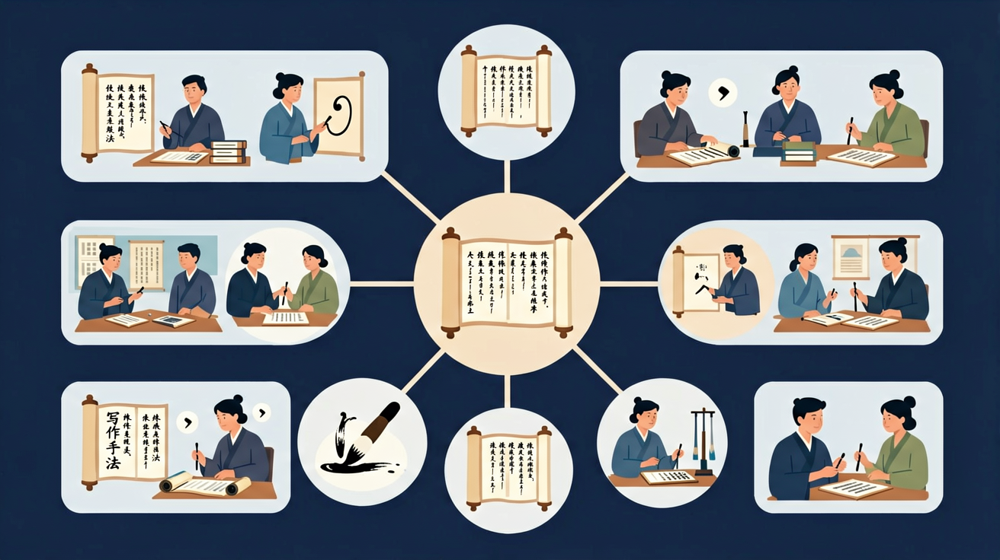

🌍 And（已知）：我们已经认识了很多汉字
⚡ But（问题）：但如何把想法和故事清晰地写出来？
💡 Therefore（新知）：因此我们学习写作，通过结构和表达技巧让文章更生动有力

把一个事物比作另一个事物，更形象生动
赋予事物人的动作情感，更活泼有趣
三个以上相似结构，增强气势和节奏
故意夸大或缩小，突出事物特征
把两种事物相比较，突出差异
自问自答，引起读者思考和注意
先点一个句子，再点对应的修辞手法，完成配对！
点击下方句子，选择它对应的修辞类别，把句子放入正确的分类盒！
📜 阅读下面的文段，完成两项任务：
"深秋的早晨，走进山里，满地的落叶像金色的地毯。山风轻轻地抚摸着你的脸颊，带来淡淡的松香。溪水叮叮咚咚地唱着歌，跳过石头，钻进草丛。是谁给秋天涂上了这么迷人的色彩？是那无私奉献的大自然。"
完成各关卡获得更高分！
| 修辞 | 定义 | 关键词 | 例句 |
|---|---|---|---|
| 比喻 | 用甲比乙 | 像、是、如同、仿佛 | 月亮像银盘 |
| 拟人 | 物当人写 | 人的动作/情感词 | 花儿在微笑 |
| 排比 | 三个以上平行结构 | 结构相似、语气相近 | 爱学习，爱劳动，爱祖国 |
| 夸张 | 故意夸大缩小 | 极限表达 | 眼泪流成了河 |
| 对比 | 两者相比 | 截然不同 | 天壤之别 |
| 设问 | 自问自答 | 问号→回答 | 何为幸福？就是… |
比喻：A像B，A和B是不同类的事物。例："她的眼睛像星星。"
拟人：把A当成人来写，A不是人。例："星星眨着眼睛。"
区分方法：有没有"像/如同/是"等比喻词？有→比喻；物体做了人的行为→拟人。
《荷塘月色》："月光如流水一般，静静地泻在这一片叶子和花上。"（比喻）
《海燕》："让暴风雨来得更猛烈些吧！"（拟人+呼告）
朱自清《背影》中大量使用细节描写，没有华丽辞藻，却感人至深。
好文章三要素：中心明确、材料具体、语言通顺；总-分-总是基本结构
回忆：今天学了哪些关键词和规则？试着说出来。
用自己的话解释今天学的核心概念，不看书能说清楚吗？
用今天的知识解决一个实际问题，或写一个新例子。
把今天的知识与已有知识联系起来：有什么共同点？有什么区别？能不能自己创造一道新题？
先独立作答，再点选项查看对错与错因。
下列哪句最适合替换'树很高大'来突出梧桐树的气势？
小雨写'秋风里，梧桐叶欢快地跳着圆舞曲'，主要运用了什么手法？
下列描写中同时包含比喻和拟人的是：
把'阳光照在树叶上'改写成比喻句：阳光像____穿过梧桐叶的缝隙
答案：金色的细沙
将阳光比作可触摸的具体事物，增强画面感
续写拟人句：清晨的露珠____
答案：在叶尖上荡秋千
赋予露珠人的动作，体现动态美感
选择校园一处景物，用拟人手法写观察日记
❓ 为什么我写的比喻句总被老师说‘不恰当’？
❓ 拟人和比喻到底有什么区别？
❓ 怎样让排比句读起来更有节奏感？
学完这一课，这些问题你都能自信地回答。
比喻像放大镜，拟人像给玩具配音
拟人是把物当人写（柳树跳舞），比喻是不同事物的相似点（柳枝像头发）
排比重在句式整齐，对偶要求字数相同
操场边‘点头的向日葵’就是拟人
用排比给班规写标语：早读要响亮，排队要整齐，作业要工整
✅ 比喻词‘像’不能省略
💡 混淆比喻句与判断句
✅ 需添加人的特征如‘铅笔哼着歌跑步’
💡 仅赋予动作未体现人性
口诀：拟人给物加动作，比喻要有相似点，排比三句起波浪
类比：写比喻句像做水果沙拉，苹果（本体）和草莓（喻体）要酸甜搭配